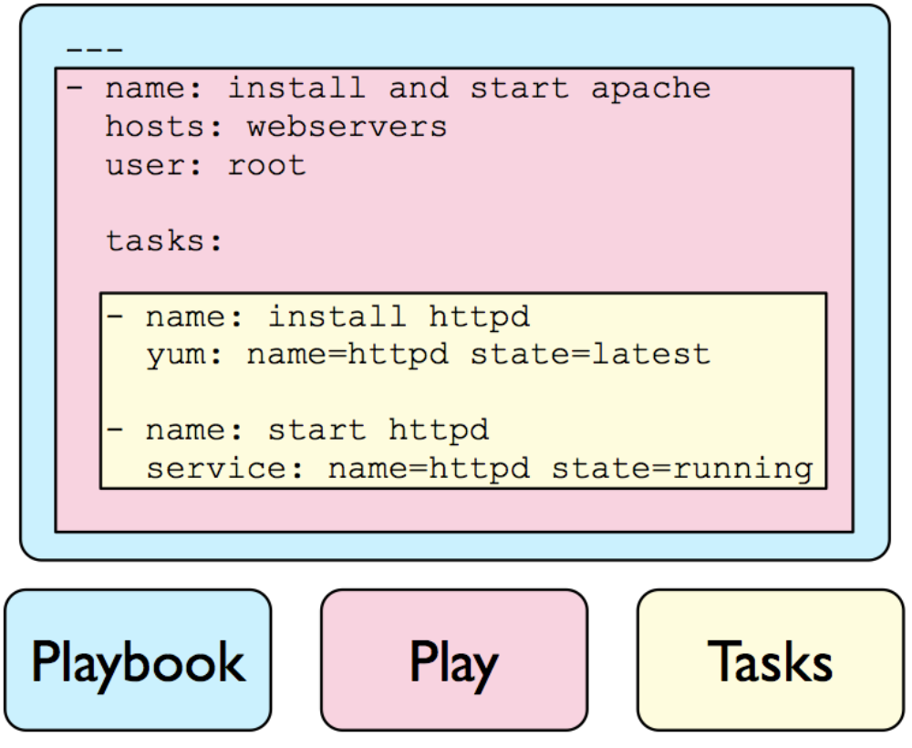

Ansible
Table of Contents
| Author | Hao Ruan (ruanhao1116@gmail.com) |
| Date | 2018-02-01 22:30:26 |
Ansible is used to: -> execute tasks for an inventory, -> utilizing some modules, -> using or populating some variables, -> processing some file templates, -> in a playbook, which can be organized in roles.
Table of Contents
1 Inventory
1.1 静态
[master] server-master ansible_ssh_host=10.0.0.5 ansible_ssh_user=ubuntu [standbys] server-standby-01 ansible_ssh_host=10.0.0.6 ansible_ssh_user=ubuntu server-standby-02 ansible_ssh_host=10.0.0.7 ansible_ssh_user=ubuntu [replication:children] master standbys
2 Module
2.1 文件处理
2.1.1 synchronize
synchronize: src=some/relative/path dest=/some/absolute/path rsync_path="sudo rsync" synchronize: src=some/relative/path dest=/some/absolute/path archive=no links=yes synchronize: src=some/relative/path dest=/some/absolute/path checksum=yes times=no synchronize: src=some/relative/path dest=/some/absolute/path rsync_opts=--no-motd,--exclude=.git mode=pull
2.1.2 copy
- src
- 本地文件地址，可以是绝对路径，也可以是相对路径。 如果路径是一个目录，它将递归复制。
如果路径使用
/来结尾，则只复制目录里的内容；如果没有使用/来结尾，则包含目录在内的整个内容全部复制，类似于rsync。 - dest
- 远程主机的绝对路径，如果源文件是一个目录，那么该路径也必须是个目录。
- force
- 如果设置为
yes（默认），则强制覆盖。
2.1.3 get_url
get_url: url=http://example.com/path/file.conf dest=/etc/foo.conf mode=0440
2.1.4 template
2.2 网络管理
2.2.1 ping
ansible <pattern> -m ping
2.3 服务管理
2.3.1 service
- enabled
- 是否开机启动
- name
- 服务名称
- pattern
- 就会通过
ps命令在进程中根据该模式进行查找，如果找到，则认为该服务依然在运行。 - sleep
- 如果执行了
restarted，在则 stop 和 start 之间等待几秒。 - state
-
started,stopped,restarted,reloaded
service: name=httpd state=started enabled=yes service: name=foo pattern=/usr/bin/foo state=started # 若启动后发现 /usr/bin/foo 这个进程存在，则认为启动成功
2.3.2 cron
- backup
- 先备份原任务计划内容
- job
- 执行的任务（命令）
- name
- 任务的描述
- special_time
-
reboot,yearly,annually,monthly,weekly,daily,hourly
- state
- 创建 (
present) / 删除(absent) - user
- 执行用户身份
cron: name=do_something_when_reboot special_time=reboot job="/some/job.sh" cron: name=do_something_when_reboot state=absent
2.4 远程执行
2.4.1 command
- creates
- 指定一个文件名，如果给文件存在，则不执行。
- removes
- 指定一个文件名，如果给文件不存在，则不执行。
- chdir
- 执行命令前，切换到指定目录。
2.4.2 shell
和 command 类似， 但支持管道 。
2.5 资产管理
2.5.1 setup
ansible <pattern> -m setup -a 'filter=ansible_*_mb' # 查看主机内存信息 ansible <pattern> -m setup -a 'filter=ansible_eth[0-2]' # 查看地接口为eth0-2的网卡信息 ansible <pattern> -m setup --tree /tmp/facts # 将所有主机的信息输入到 /tmp/facts 目录下
2.6 包管理
2.6.1 apt
2.6.2 yum
2.7 主要用于 Playbook 的模块
2.7.1 pause
执行的过程中暂停一定时间或者提示用户进行某些操作。
pause: prompt="ENTER to continue CTRL-C a to quit" pause: seconds=30
2.7.2 wait_for
执行过程中等待某些操作完成以后再进行后续操作。
# 等待 8080 端口已正常监听，才开始下一个任务 wait_for: port=8080 state=started # 等待 8000 端口正常监听，每隔 10s 检查一次，直至等待超时 wait_for: port=8000 delay=10 # 等待 8000 端口直至有连接建立 wait_for: host=0.0.0.0 port=8000 delay=10 state=drained # 等待 8000 端口有连接建立，如果连接来自10.2.1.2或者10.2.1.3，则忽略 wait_for: host=0.0.0.0 port=8000 state=drained exclude_hosts=10.2.1.2,10.2.1.3 # 等待 /tmp/foo 文件已创建 wait_for: path=/tmp/foo # 等待 /tmp/foo 文件已创建，而且该文件中需要包含 completed 字符串 wait_for: path=/tmp/foo search_regex=completed # 等待 /var/lock/file.lock 被删除 wait_for: path=/var/lock/file.lock state=absent # 等待指定的进程被销毁 wait_for: path=/proc/3466/status state=absent
2.7.3 add_host
执行的过程中动态的添加主机到指定的主机组中。
2.7.4 group_by
执行的过程中动态的创建主机组。
- name: Create operating system group hosts: all tasks: - group_by: key=os_{{ ansible_distribution }} - name: Run on CentOS hosts only hosts: os_CentOS tasks: - name: Install Apache yum: name=httpd state=latest - name: Run on Ubuntu hosts only hosts: os_Ubuntu tasks: - name: Install Apache apt: pkg=apache2 state=latest
2.7.5 debug
用于在调试中输出信息。
debug: msg="System {{ inventory_hostname }} has gateway {{ ansible_default_ipv4.gateway }}" debug: var=result verbosity=2
2.7.6 fail
通常与条件语句组合使用，当满足条件时，终止当前 play 的运行。
fail: msg="..."
3 Task
每个任务需要包含的信息：
- 用到的模块
- 模块参数
- 用于描述的名称 [可选]
- 执行条件 [可选]
4 Variable
4.1 在 Inventory 中定义变量
[mygroup] host1 host2 [mygroup:vars] proxy=1.2.3.4
4.2 在 Playbook 中定义变量
4.2.1 vars, vars_files 关键字
- hosts: all user: root vars: var1: a var2: b vars_files: - /vars/nginx_vars.yml
/vars/nginx_vars.yml:
http_port: 80 server_name: localhost cert_file: /etc/nginx/ssl/nginx.crt key_file: /etc/nginx/ssh/nginx.key conf_file: /etc/nginx/conf/default.conf
4.2.2 vars_prompt 实现人机交互
hosts: all user: root vars_prompt: - name: 'https_passphrase' # 变量名 prompt: 'Please input:' private: yes # 输入内容不会在终端显示
4.2.3 通过 roles 带入变量
4.3 注册变量
使用 register 将任务的执行结果保存到变量中
- hosts: all tasks: - shell: cat /etc/hosts register: result - shell: echo "/etc/hosts contains localhost" when: result.stdout.find('localhost') != -1
- hosts: all tasks: - command: ls /home register: result - file: path=/mnt/home/{{ item }} src=/home/{{ item }} state=link with_items: result.stdout_lines # same as with_items: result.stdout.split()
4.4 通过 fact 获取/设置变量
- name: Configure MySql hosts: sqlservers tasks: - name: Install MySql yum: name=mysql-server state=installed - name: Calculate InnoDB buffer pool size set_fact: innodb_buffer_pool_size_mb="{{ ansible_memtotal_mb / 2 }}" - name: Configure MySql template: src=templates/mysql.cnf dest=/etc/mysql.cnf owner=root group=root mode=0644 notify: restart mysql - name: Start MySql service: name=mysqld state=started enabled=yes handlers: - name: Restart MySql service: name=mysqld state=restarted
4.5 内置变量
4.5.1 hostvars
用于获取某台指定的主机的相关变量。
{{ hostvars['db.example.com'].ansible_eth0.ipv4.address }}
需要注意的是 db.example.com 不能使用 ip 地址来取代， 只能使用主机名或别名 。
4.5.2 inventory_hostname
利用 hostvars 和 inventory_hostname 变量，可以输出与当前主机相关联的所有变量：
- debug: var=hostvars[inventory_hostname]
4.5.3 inventory_hostname_short
如果一台主机的 inventory_hostname 为 server1.exmaple.com ，则 inventory_hostname_short 的值为 server1 。
4.5.4 group_names
用于标识当前正在执行 task 的目标主机位于的主机组。
4.5.5 groups
当需要访问一组主机的变量时，groups 变量会很有用。
在所有的 dbservers 组的服务器上创建一个数据库用户 test ：
- name: Create a user for all db servers mysql_user: name=test password=test host={{ hostvars.[item].ansible_eth0.ipv4.address }} state=present with_items: groups['dbservers']
4.5.6 play_hosts
当前 playbook 会在哪些 hosts 上运行。
4.5.7 ansible_version
当前 ansible 的版本。
4.5.8 inventory_dir
主机清单所在目录。
4.5.9 inventory_file
主机清单文件。
4.6 通过命令行设置变量
--extra-vars 'user=starbucks' --extra-vars '{"pacman":"mrs","ghosts":["inky","pinky","clyde","sue"]}'
5 Template
5.1 示例
options {
listen-on port 53 {
127.0.0.1;
{% for ip in ansible_all_ipv4_addresses %}
{{ ip }};
{% endfor %}
};
};
{# Variables for zone config #}
{% if 'authorativenames' in group_names %}
{% set zone_type = 'master' %}
{% else %}
{% set zone_type = 'slave' %}
{% endif %}
type {{ zone_type }};
{% if 'authorativenames' not in group_names %}
masters { 192.168.2.2; };
{% endif %}
6 Playbook
ansbile-playbook 是一系列 ansible 命令的集合，使用 yaml 语言编写。 playbook 命令根据自上而下的顺序依次执行。
playbook 允许你传输某个命令的状态到后面的指令, 如可以从一台机器的文件中抓取内容并附为变量, 然后在另一台机器中使用, 这使得可以实现一些复杂的部署机制, 这是 ansible 命令无法实现的。

6.1 示例
- name: Example hosts: all user: root gather_facts: True vars: user: test tasks: - name: Create User user: name="{{ user }}" - name: Install Apache on CentOS yum: name=httpd state=present when: ansible_os_family =="CentOS"
6.2 循环
6.2.1 with_items
6.2.2 with_nested
6.2.3 with_dict
6.2.4 with_subelement
6.2.5 with_sequence
6.2.6 with_random_choice
6.2.7 do_util
6.3 条件
6.3.1 when
6.3.1.1 jinja2 语法
6.3.1.2 变量不存在
tasks: - shell: echo "I've got '{{ foo }}' and am not afraid to use it!" when: foo is defined - fail: msg="Bailing out. this play requires 'bar'" when: bar is not defined
6.3.1.3 用于循环
tasks: - command: echo {{ item }} with_items: [ 0, 2, 4, 6, 8, 10 ] when: item > 56
6.3.1.4 用于 include
- include: tasks/sometasks.yml when: "'reticulating splines' in output"
6.3.1.5 用于 roles
- hosts: webservers roles: - { role: debian_stock_config, when: ansible_os_family == 'Debian' }
6.4 handlers
用于当关注的资源发生变化时采取一定的操作。
notify 这个 action 可用于在每个 play 的最后被触发，这样可以避免多次有改变发生时每次都执行指定的操作， 而仅在所有的变化发生完成后 一次性 地执行指定操作。
7 Role
在 Ansible 中，Playbook 组织 Task ，Role 组织 Playbook 。
7.1 创建
ansible-galaxy init <role>
7.1.1 roles 各目录的作用
- files
- 存放由 copy 或 script 等模块调用的文件
- tempaltes
- Jinja2 模板文件
- tasks
- 定义了角色的任务列表。
可以使用 include 包含其他的位于此目录中的 task 文件。
- handlers
- 用于定义角色用到的各 handler 。
在 handler 中可以使用 include 包含的其他位于此目录中 的 handler 文件。
- vars
- 用于定义角色用到的变量
- meta
- 定义角色的特殊设定及依赖关系等
- default
- 设定默认变量
7.2 pre_tasks 和 post_tasks
在执行 roles 时，需要在其前或其后执行某些任务，可以使用 pre_tasks 及 post_tasks 来声明。
7.3 依赖
如果当前 role 在执行前需要依赖另一个 role ，可以在 meta 目录中的 main.yml 文件中定义依赖关系。
dependencies: - { role: common, some_parameter: 3 } - { role: postgres, dbname: blarg, other_parameter: 12 }
7.4 项目结构
site.yml
ancible.cfg
hosts
group_vars/
all
group-1
group-2
host_var/
all
host-1
host-2
roles/
common/
files/
templates/
tasks/
handlers/
vars/
defaults/
meta/
web/
files/
templates/
tasks/
handlers/
vars/
defaults/
meta/
7.4.1 入口文件 (site.xml)
---
- hosts: webservers
user: root
roles:
- common
- web
7.4.2 执行
ansible-playbook site.yml -vvv